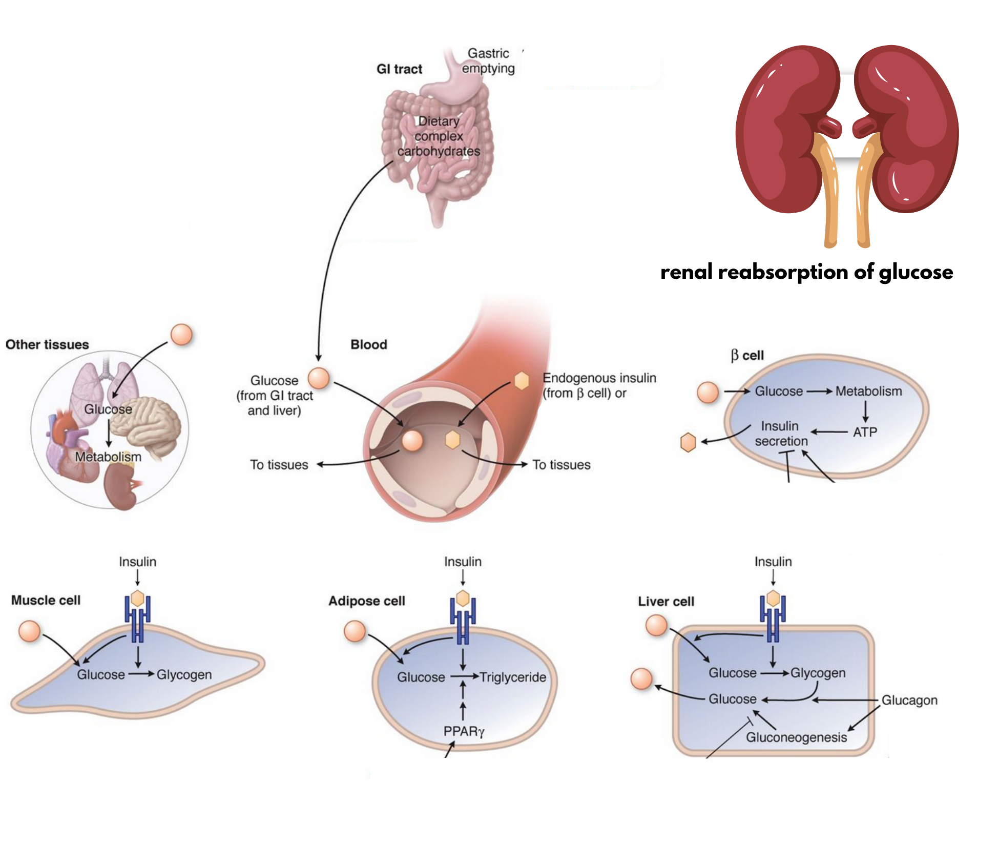
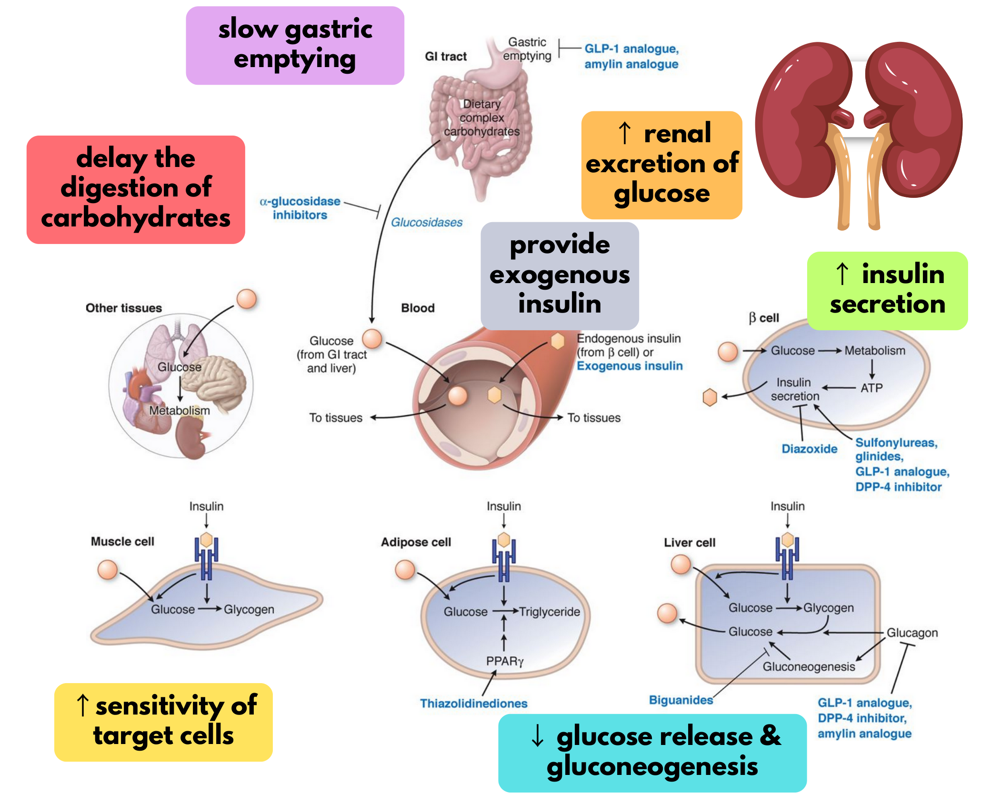
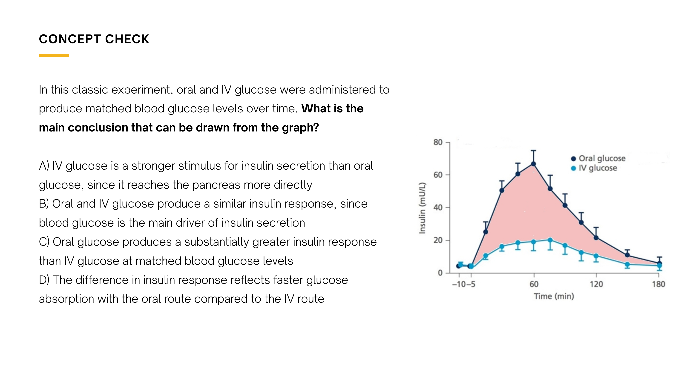
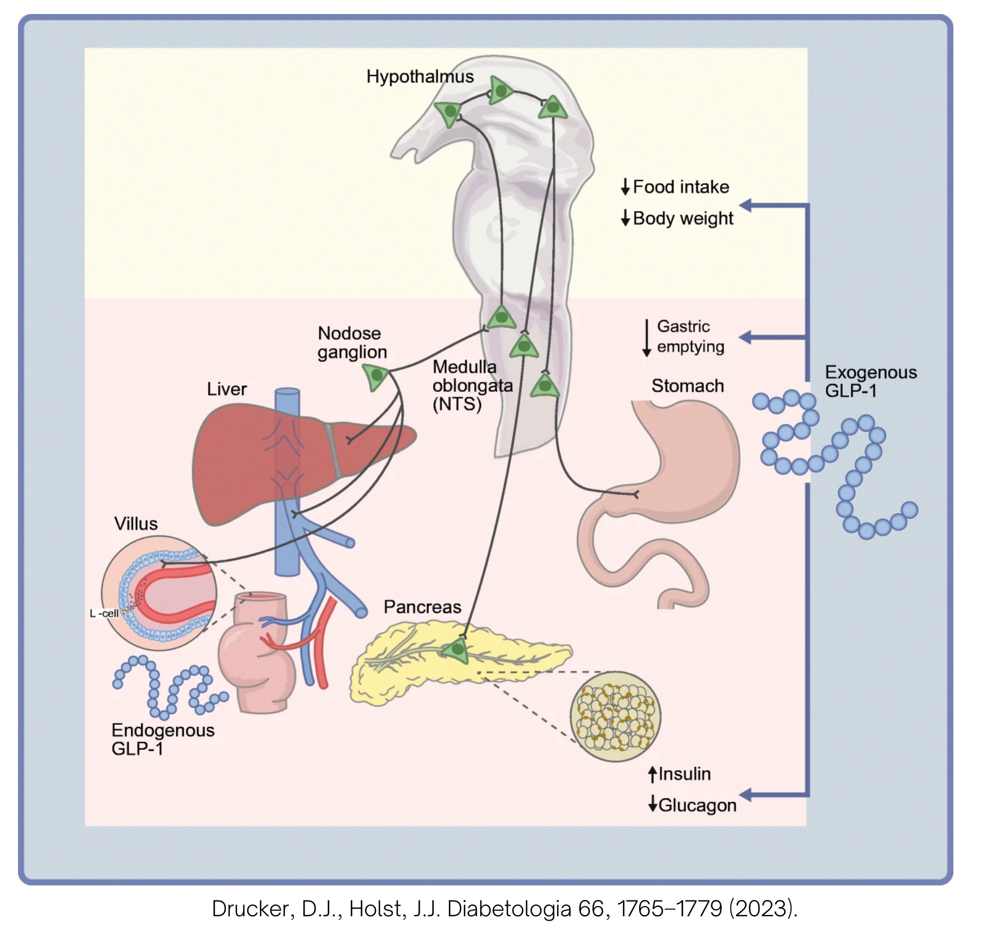

Pharmacology of Glucose-Lowering Drugs
- Metformin's lactic-acidosis risk spikes with acute illness/volume depletion + renal impairment — not simply "any CKD."
- TZDs (pioglitazone) are absolutely contraindicated in heart failure and liver dysfunction.
- SGLT2 inhibitors: not for T1DM (DKA risk, including euglycemic DKA even when glucose looks near-normal), promote weight loss (not gain), and carry "sick-day" hypovolemia risk like metformin.
- At eGFR < 15 / dialysis, insulin is essentially the only glucose-lowering agent that remains fully usable.
Learning Objectives
- Describe the main mechanisms of action of the major glucose-lowering drug classes, their efficacy and limitations.
- Describe the adverse effects/risks of each class, tied to its pharmacological action.
- Identify contraindications to using glucose-lowering drugs.
- List which drugs need dose adjustment in special populations (renal/liver failure).
Therapeutic Goals in T2DM
- Control symptoms
- Achieve individualized glycemic control
- Avoid hypoglycemia
- Minimize risk of acute and chronic complications
- Achieve optimal control of associated risk factors
Achieving normoglycemia helps reach all of these goals — sometimes through lifestyle change, sometimes pharmacologically. Choosing a drug means understanding where in glucose homeostasis it acts.
Physiology Recap: Glucose Homeostasis
Glucose is absorbed in the GI tract, enters the blood, stimulates insulin release, and insulin drives target cells (muscle, adipose, liver, brain) to use it — while the kidney filters and reabsorbs glucose along the way.

The Pharmacological Roadmap
Each drug class targets a specific point in glucose homeostasis — this single diagram is worth memorizing:

Biguanides — Metformin
An insulin sensitizer: improves how target tissues respond to the insulin already present, rather than triggering more release.
| Target tissue | Effect |
|---|---|
| Liver | ↓ fatty liver, ↓ gluconeogenesis, ↑ hepatic insulin sensitivity |
| Muscle | ↑ glucose uptake |
| GI tract | ↑ release of incretins (e.g. GLP-1) → ↓ glucagon, ↑ insulin release |
MOA: activates AMP-activated protein kinase (AMPK) by shifting the ATP:ADP ratio, improving insulin resistance and peripheral glucose use.
PK: not metabolized by the liver, negligible protein binding, eliminated unchanged by the kidney.
| ADRs | Detail |
|---|---|
| Common | Nausea, indigestion, bloating, diarrhea; ↓ vitamin B12. Strategy: titrate the dose. |
| Serious (rare) | Lactic acidosis. Lactate is normally converted back to pyruvate via hepatic gluconeogenesis — metformin blocks gluconeogenesis, so lactate accumulates instead. |
Place in therapy: first-line — safe, effective, cheap, weight-neutral, tolerable, combinable, possible CV benefit.
Highest lactic-acidosis risk: acute illness with volume depletion (e.g. vomiting, reduced oral intake), especially with pre-existing renal impairment — clearance transiently drops right when lactate production is already primed to rise.
Thiazolidinediones (TZDs)
Also an insulin sensitizer — doesn't trigger insulin release, improves the body's response to it.
| Target tissue | Effect |
|---|---|
| Adipose | ↑ differentiation, ↑ adiponectin, ↓ lipolysis, ↓ free fatty acids |
| Liver | ↓ ectopic lipid accumulation, ↓ gluconeogenesis |
| Muscle | ↓ ectopic lipid accumulation, ↑ glucose uptake |
Agents: pioglitazone, rosiglitazone. MOA: activates PPARγ. PK: highly protein-bound, extensively hepatically metabolized.
| ADR | Mechanism |
|---|---|
| Weight gain | ↑ adipose tissue differentiation |
| Fluid retention | ↑ sodium channel expression |
| ↓ bone mineral density | Changes in osteoblast differentiation |
| Bladder changes | Histopathological changes (mechanism unclear) |
Absolute contraindications: liver dysfunction, heart failure. Also: ↑ fracture risk, contraindicated in bladder cancer, not the best choice for obese patients.
Sulfonylureas
The first of two insulin secretagogues — these depend on β-cells still being able to secrete insulin, and directly trigger release (unlike the sensitizers above).
Agents: tolbutamide, chlorpropamide, glyburide, gliclazide, glimepiride.
MOA: inhibits the K⁺/ATP channel on β-cells → depolarization → Ca²⁺ influx → insulin secretion.
PK: highly protein-bound; hepatic metabolism; renal excretion.
| ADRs / considerations |
|---|
| Weight gain (insulin is anabolic); hypoglycemia risk; many clinically relevant drug-drug interactions |
| Not the best choice in elderly patients; contraindicated in renal failure, hepatic failure, and pregnancy |
| Glyburide specifically should be avoided earlier than other SUs in renal impairment — it has active metabolites that are cleared renally and accumulate, prolonging hypoglycemia risk |
"Secondary failure" on an SU (glucose creeping up despite max dose) usually isn't the drug wearing off — it reflects the underlying progressive β-cell decline of T2DM. Since the pancreas itself has less capacity left, switching to a different secretagogue (or adding one) won't fix it — the next step is usually a drug from a different, β-cell-independent class.
Place in therapy: second-line, reserved for patients without established chronic disease.
Meglitinides
Agent: repaglinide.
MOA: inhibits the same K⁺/ATP channel as sulfonylureas, but at a different binding site — giving it a faster onset and much shorter duration.
PK: fast onset, short duration; taken TID with meals; metabolized into inactive metabolites, so it doesn't accumulate.
ADRs: weight gain and hypoglycemia risk, same as sulfonylureas but lower risk overall.
Place in therapy: second-line, best suited for post-prandial glucose control.
GLP-1 Receptor Agonists & Tirzepatide
Both are incretin-based therapies — the "incretin effect" is why oral glucose triggers far more insulin release than IV glucose at the same blood glucose level: gut hormones add their own stimulus on top of glucose itself.


| Class | Agents | MOA |
|---|---|---|
| GLP-1 receptor agonists | Exenatide, Liraglutide, Dulaglutide, Semaglutide, Lixisenatide | Activate GLP-1 receptors centrally + peripherally → glucose-dependent insulin secretion |
| Tirzepatide | Tirzepatide | Dual GLP-1 + GIP receptor agonist |
| GLP-1 RAs | Tirzepatide (GLP-1/GIP) | |
|---|---|---|
| Route | SC | SC |
| Frequency | Daily, BID, or once weekly | Weekly |
| Metabolism | Variable | Variable |
| Elimination | Renal | Renal + fecal |
| ADR | Why |
|---|---|
| GI effects | GLP-1 delays gastric emptying |
| Weight loss | ↑ satiety, ↓ food intake (often the intended effect) |
| Pancreatitis | Direct pancreatic action |
Low hypoglycemia risk as monotherapy (insulin release stays glucose-dependent). Contraindicated in medullary thyroid cancer, MEN2, and pancreatic cancer. Tirzepatide has a DDI with oral contraceptives.
Place in therapy: GLP-1 receptor agonists are first and second-line, especially for cardiorenal disease (LEADER, FLOW, SUSTAIN-6, PIONEER-6, REWIND trials). Tirzepatide is second-line.
DPP-4 Inhibitors
Agents ("-gliptin"): sitagliptin, saxagliptin, linagliptin, alogliptin.
MOA: inhibit the DPP-4 enzyme → ↑ endogenous GLP-1 → ↓ glucagon secretion.
PK: oral, daily or BID; mostly hepatic metabolism; renal elimination — except linagliptin, which is cleared hepatobiliary and needs no dose adjustment at any level of renal function.
| ADR | Why |
|---|---|
| Generally well tolerated | Only raises endogenous GLP-1 modestly — unlike GLP-1 RAs, doesn't meaningfully delay gastric emptying, so GI effects are much milder |
| Joint pain (arthralgia) | Class-specific ADR |
| Pancreatitis (rare) | Same incretin-pathway signal as GLP-1 RAs |
| Infection risk (incl. lung) | DPP-4 inhibition also occurs in the lungs |
Low hypoglycemia risk as monotherapy. Unlike GLP-1 RAs, DPP-4 inhibitors do NOT carry the medullary thyroid cancer/MEN2 warning — that risk comes from sustained pharmacologic-level GLP-1 receptor activation, which DPP-4i doesn't produce. Saxagliptin specifically has a heart-failure hospitalization signal (SAVOR-TIMI 53).
One of the safest classes for elderly patients — minimal hypoglycemia risk, few drug interactions, and (for linagliptin) no renal dose adjustment.
Place in therapy: second-line. Between DPP-4i and GLP-1RA, GLP-1RA is generally the stronger choice.
α-Glucosidase Inhibitors
Agent: acarbose. MOA: competitively inhibits intestinal brush-border α-glucosidase enzymes → slows cleavage of complex carbohydrates → slower digestion/absorption → lower postprandial glucose peak. Must be taken with food (TID).
ADRs: GI effects (flatulence, bloating). Low hypoglycemia risk as monotherapy. Avoid in chronic intestinal disorders (e.g. IBD, IBS, partial obstruction) — the GI ADRs would worsen exactly those conditions. Place in therapy: adjuvant only — less effective than other classes.
SGLT2 Inhibitors
Agents ("-flozin"): Canagliflozin, Dapagliflozin, Empagliflozin, Ertugliflozin. MOA: inhibit the SGLT2 co-transporter → ↑ renal excretion of glucose and sodium. PK: extensive hepatic metabolism (watch for drug-drug interactions); renal + fecal excretion.
| ADR | Mechanism |
|---|---|
| UTI / genital infections | ↑ glucose in the urogenital tract |
| Hypovolemia (from ↑ sodium excretion and osmotic diuresis/polyuria) | Can precipitate prerenal AKI/shock during acute illness, vomiting, or reduced intake ("sick-day" risk, similar spirit to metformin) |
| ↑ amputation risk | ↓ blood flow to lower limbs |
| ↑ fracture risk | Mechanism debated — proposed mineral/bone effects (altered phosphate handling) plus falls from volume depletion |
Low hypoglycemia risk as monotherapy; actually promotes weight loss. Caution with renal dysfunction, osteoporosis, or diuretic use.
Place in therapy: action is insulin-independent and β-cell function-independent, so they work as both first- and second-line agents — though efficacy depends on renal function. Well-documented cardiorenal benefits (EMPA-REG, DAPA-HF, CREDENCE, CANVAS, EMPA-KIDNEY trials). Especially good for patients with heart failure, CKD, or high cardiovascular risk.
Renal Function & Dosing
As kidney function falls, some classes need dose reduction, some need to be avoided entirely, and some don't change at all — worth knowing class-by-class:
| Class | As renal function declines | eGFR < 15 / dialysis |
|---|---|---|
| Biguanides (Metformin) | Dose-reduce below eGFR ~45 | Avoid |
| Sulfonylureas | Mostly no change until severe impairment; avoid glyburide earlier (active renal-cleared metabolites) | Avoid |
| Meglitinides | Generally no change needed | Limited data |
| TZDs (Pioglitazone) | No change — hepatically cleared | No change |
| GLP-1 RAs / Tirzepatide | Generally no change needed | Limited data |
| DPP-4 inhibitors | Saxagliptin & sitagliptin need dose reduction; linagliptin needs none (hepatobiliary clearance) | Avoid saxagliptin/sitagliptin; linagliptin still OK |
| SGLT2 inhibitors | Glucose-lowering efficacy falls as eGFR drops; many are "don't start, but can continue" below ~45 for the cardiorenal benefit alone | Avoid / limited data |
| α-Glucosidase inhibitors | Limited data as renal function falls | Avoid |
| Insulin | Dose reduction may be needed (↓ clearance) | Still usable — no hard floor |
At eGFR < 15 or on dialysis, insulin is essentially the only agent that remains fully usable — metformin, most sulfonylureas, and most DPP-4i/SGLT2i are avoided.
All Classes Compared
Everything above, side by side:
| Class | Agent(s) | MOA | Contraindications | Key ADRs | Place in therapy |
|---|---|---|---|---|---|
| Biguanides | Metformin | ↑ AMPK, ↓ gluconeogenesis | Severe renal impairment (eGFR < 30) | GI upset, ↓ B12, lactic acidosis (rare) | First-line |
| Thiazolidinediones | Pioglitazone, rosiglitazone | PPARγ activation | Heart failure, liver dysfunction, bladder cancer | Weight gain, fluid retention, ↓ bone density | Adjunct |
| Sulfonylureas | Glyburide, gliclazide, glimepiride | Block K⁺/ATP channel | Renal/hepatic failure, pregnancy | Weight gain, hypoglycemia (high risk) | Second-line |
| Meglitinides | Repaglinide | Same channel, different site | None absolute; caution in hepatic impairment | Weight gain, hypoglycemia (lower risk than SUs) | Second-line, post-prandial |
| GLP-1 receptor agonists | Semaglutide, liraglutide, dulaglutide | ↑ glucose-dependent insulin, ↓ glucagon | Medullary thyroid CA, MEN2, pancreatic CA | GI effects, weight loss (low hypo risk) | First/second-line |
| Tirzepatide | Tirzepatide | Dual GLP-1/GIP agonist | Same as GLP-1 RAs | GI effects, weight loss | Second-line |
| DPP-4 inhibitors | Sitagliptin, linagliptin | ↑ endogenous GLP-1 | None major; caution with pancreatitis hx | Joint pain; no MTC/MEN2 warning | Second-line |
| α-Glucosidase inhibitors | Acarbose | ↓ carb absorption | Chronic intestinal disorders | GI/flatulence | Adjuvant only |
| SGLT2 inhibitors | Empagliflozin, dapagliflozin, canagliflozin | ↑ renal glucose excretion | Not for T1DM (DKA risk); avoid in dialysis | UTI/genital infections, hypovolemia, ↑ amputation/fracture risk | First/second-line |
Adapted (not reproduced verbatim) from Fabiana Crowley, PhD, "Pharmacology of Glucose Lowering Drugs" lecture slides, Schulich School of Medicine & Dentistry, plus lecture notes. Renal dosing and case-based clinical points added from a later case-based review session on the same material.